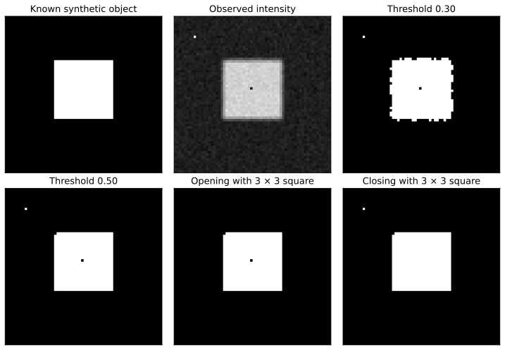
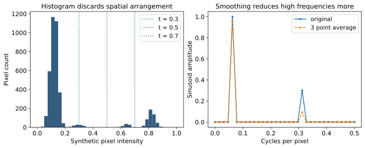

Browse chapters
15 Measure images as data
Turn a picture into a defined measurement
Suppose a camera records manufactured parts and you want to estimate the area of a bright component. The decision might be whether the component is within a size tolerance or whether a process is drifting. Before choosing an image algorithm, define the physical quantity, the acceptable uncertainty, and the acquisition conditions.
An image is an array, but its entries acquire meaning from the camera and processing history. A value might represent a sensor count, a display brightness, a categorical class, or a calibrated physical quantity. A visually bright pixel is not automatically a linear measurement of illumination. Exposure, lens distortion, compression, color processing, and saturation can affect the result.
The worked project uses an invented 64 by 64 grayscale image. A known square occupies rows 18 through 41 and columns 20 through 43, inclusive. It has 576 pixels. At an assumed spacing of 0.2 mm in both directions, its true synthetic area is 576 × 0.2 × 0.2 = 23.04 mm². We blur the boundary, add noise, insert one bright speck outside the object, and make one dark hole inside it. Because we generated the scene, we can distinguish the known object from what an algorithm measures.
Keep values and coordinates explicit
A grayscale array has two axes, usually row then column. A color array commonly adds a final channel axis. Image coordinates often start at the top left, with row increasing downward. A geometric Cartesian plot usually has vertical coordinates increasing upward. Always state the coordinate convention before comparing centroids, rotations, or trajectories.
Integers and floating-point values need deliberate conversion. An unsigned eight-bit image stores values from 0 to 255; subtraction can wrap if performed in that type. Convert to a suitable floating type before arithmetic. Dividing by 255 makes a unitless 0-to-1 representation; it does not perform sensor calibration or reverse a nonlinear color encoding. Image libraries also have dtype and range conventions that may differ from a general numerical array. scikit-image image data types
Preserve the original image, acquisition identifier, timestamp, exposure settings, pixel calibration, and every transformation. If you resize an image, update spacing. If you crop it, retain the offset needed to map coordinates back to the original. A missing pixel, a saturated pixel, and a genuine zero measurement are different states.
A histogram cannot locate an object
A histogram counts pixels in intensity intervals. It can reveal saturation, limited contrast, or a rough separation between dark and bright regions. It cannot tell you where the bright pixels are. Randomly shuffling all pixels leaves the histogram unchanged while destroying the shape.
A threshold classifies pixels using a rule such as intensity greater than or equal to 0.5. It is a simple segmentation method: it divides the image into foreground and background. In this project, thresholds 0.3, 0.5, and 0.7 produce different boundaries because blurring creates intermediate intensities.
| Threshold | Largest component pixels | Area in mm² | IoU with known square |
|---|---|---|---|
| 0.30 | 617 | 24.68 | 0.930 |
| 0.50 | 574 | 22.96 | 0.997 |
| 0.70 | 485 | 19.40 | 0.842 |
These are measured outputs of the generated fixture. The largest component excludes the isolated bright speck. Threshold 0.5 is close to the known area in this one image, but selecting it after inspecting the answer is tuning. It needs validation on separate images with different object sizes, brightness, noise, and acquisition conditions before becoming an operational rule.
A threshold sweep gives a sensitivity analysis, not a confidence interval. A confidence or coverage interpretation requires a defensible probability model or sampling design. The spread among three settings does not acquire such a meaning merely because it looks like an error bar.
Convolution makes local context explicit
A filter combines neighboring pixel values. A three by three mean filter replaces a pixel with the average of its neighborhood. If the neighborhood contains one value of 8 and eight zeros, the result is 8/9. A kernel is the small array of weights used in that calculation.
For two-dimensional convolution, the output at row r and column c is a sum of kernel values multiplied by image values at reversed offsets:
output[r, c] = sum over i,j of kernel[i,j] × image[r-i,c-j]Cross-correlation uses the opposite offset convention without reversing the kernel. The two operations agree for a symmetric kernel, such as the smoothing kernel used here. They differ for asymmetric kernels, including some directional filters. Library names are not a substitute for checking the convention.
Our blur kernel is the outer product of [1, 2, 1] with itself, divided by 16. The weights sum to one, so a constant image remains constant away from complications introduced by boundaries. The center gets the greatest weight; corners get the least. This suppresses some fine-scale variation while also spreading an abrupt boundary across nearby pixels.
At the edge of the image, the neighborhood extends beyond available data. Zero padding, reflection, repetition of the nearest value, and periodic wrapping give different results. The companion's two-dimensional convolution uses NumPy reflect padding, which excludes the edge value from the reflected extension. This corresponds to SciPy's mirror mode; SciPy's reflect mode repeats the edge value. Its frequency illustration deliberately uses periodic wrapping so its sinusoidal calculation is exact. Boundary behavior belongs in the method definition. SciPy convolution documentation

Figure 9. The known square, simulated observed image, two thresholds, and two morphological transformations. Each panel uses the same pixel grid. Changes that make a mask appear cleaner can also change the measured area or topology.
Frequency describes how quickly a pattern changes
A spatial frequency says how often a pattern repeats per unit of distance. Four cycles across a 64-pixel row is 4/64 = 0.0625 cycles per pixel. Twenty cycles is 0.3125 cycles per pixel. The companion adds a sinusoid of amplitude 1 at the first frequency to a sinusoid of amplitude 0.3 at the second.
The discrete Fourier transform expresses the sampled signal as a combination of frequency components. For N samples, its kth coefficient combines each sample with a sinusoid completing k cycles across the record. The FFT is an efficient algorithm for computing this transform. The frequency units depend on sample spacing: using millimeters rather than pixels changes the physical frequency labels. NumPy Fourier transform conventions
Now smooth with weights [1/4, 1/2, 1/4]. For a sinusoid at frequency f cycles per sample, the amplitude multiplier is 1/2 + 1/2 cos(2πf). At 4/64, it is about 0.96194. At 20/64, it is about 0.30866. The output amplitudes are therefore about 0.96194 and 0.09260. The higher-frequency component is attenuated more strongly.

Figure 10. Left: the generated image histogram with three candidate thresholds. Right: exact-frequency sinusoids before and after periodic three-point smoothing. The frequency plot uses a single-sided amplitude convention, with special handling of the zero and Nyquist bins.
This does not mean that every high frequency is noise. Fine edges, small defects, and text contain high-frequency information. Smoothing can remove the feature you intended to measure. Likewise, an abrupt crop can introduce frequency leakage; a window reduces some leakage while changing amplitude and resolution properties.
Sampling imposes another limit. With one sample per pixel, 0.5 cycles per pixel is the Nyquist frequency. Frequencies above it can appear as lower frequencies after sampling. Resizing a finely striped pattern without appropriate filtering can produce new-looking bands. Once distinct physical patterns have produced the same samples, a later transform cannot recover which original pattern was present without additional assumptions.
Morphology acts on shape
For a binary mask, erosion keeps a foreground pixel only when the chosen neighborhood fits within the foreground. Dilation expands foreground wherever that neighborhood touches it. Their effects depend on the neighborhood, often called a footprint or structuring element.
Opening applies erosion followed by dilation. It can remove small isolated objects or narrow protrusions. Closing applies dilation followed by erosion. It can fill small holes or bridge narrow gaps. A three by three square footprint affects diagonal and axial neighbors; a cross-shaped footprint has different geometry. scikit-image morphology
In the fixture, the threshold-0.5 mask contains 575 foreground pixels, including the bright speck. Opening leaves 574. Closing leaves 576. These counts are not interchangeable with the largest-component area in the table. Closing can retain a speck while filling a hole; a plausible total count can conceal two opposite errors. Look at the mask and its components, not just its total area.
The companion uses a background of false outside the image for binary operations. Objects touching the border deserve special attention because that convention can shrink or remove boundary structures. A morphology recipe should specify footprint, iteration count, operation order, padding, and whether border-touching objects are retained.
From connected pixels to geometry
Connected-component labeling assigns an identifier to each contiguous foreground region. Four-connectivity joins pixels through shared edges. Eight-connectivity also joins them through corners. Two diagonal pixels form two objects under the first definition and one under the second. Choose a definition that matches the physical measurement and keep it consistent.
For a component with N pixels and rectangular pixel spacing s_row and s_col, area is N × s_row × s_col. The centroid is the mean of the component's pixel coordinates. If coordinates refer to pixel centers, state that convention before converting to physical coordinates. A bounding box summarizes extreme row and column positions; its area includes background between those extremes.
For the threshold-0.5 largest component, the centroid is approximately row 29.521, column 31.521. The known square's pixel-center centroid is row 29.5, column 31.5. This small difference is an output of the specific simulated noise and missing pixels, not a universal localization accuracy.
Perimeter is more delicate than area. Counting exposed pixel edges gives a grid-dependent estimate that changes with orientation and resolution. A contour-based estimate makes different interpolation assumptions. Circularity, often written 4π × area / perimeter², inherits that perimeter error. An apparently precise shape score can be dominated by pixel geometry at small sizes. Measurement libraries expose spacing and shape properties, but the estimator still needs validation against objects with known dimensions. scikit-image region measurements
Carry calibration uncertainty into the result
For square pixels of side s, area A = N s². If N is treated as fixed and the standard uncertainty of s is u_s, a first-order approximation gives u_A ≈ 2 N s u_s. For N = 576, s = 0.2 mm, and u_s = 0.002 mm, the calibration contribution is 0.4608 mm². A one-percent scale uncertainty becomes approximately two-percent area uncertainty.
This contribution is shared across every pixel. It does not shrink by treating 576 pixels as 576 independent calibration observations. If segmentation also makes N uncertain, its contribution and any dependence with scale must be considered. Chapter 18 develops the covariance form of this calculation. The current example isolates scale uncertainty so the arithmetic remains inspectable.
An uncertainty budget might include scale calibration, optical distortion, repeat imaging, threshold choice, and the discrepancy between a physical edge and the image-derived edge. Some terms are random under repeated acquisition; others represent uncertainty about a common correction or model. Repeating the same flawed processing on the same stored image does not measure acquisition variability.
Validate the measurement you will use
Intersection over union, or IoU, divides the pixels present in both reference and predicted masks by the pixels present in either. It measures overlap. Two masks with the same area can have poor overlap, and a very small object can have a large relative error from a few boundary pixels. Report physical area error, localization error, missed-object rate, or false-object rate when those match the decision better.
Split evaluation data by the independent acquisition unit. Patches from one image or repeated images of the same part can share lighting, texture, and defects. Putting related patches in both training and test sets can make a method appear more general than it is. Include conditions near the operational tolerance, and inspect failures by size, contrast, location, and camera session.
Exercise: use the fixture to find a case where total foreground count looks close to 576 but the mask is wrong. The closing result is a useful starting point. Then decide whether a false speck, a small internal hole, or a shifted boundary is most costly for your proposed application. That consequence should influence the measurement and evaluation, not just the visual appeal of the processed image.
A threshold becomes a measurement
Change the segmentation threshold and pixel calibration. Inspect the largest connected object.
Observed intensity
Green: largest component · gray: other foreground
The exact synthetic 64 × 64 image from chapter 15. Foreground means intensity greater than or equal to the threshold; components use four-neighbor connectivity. Area = selected pixels × spacing². This toy object is not a medical image or a validated measuring instrument.